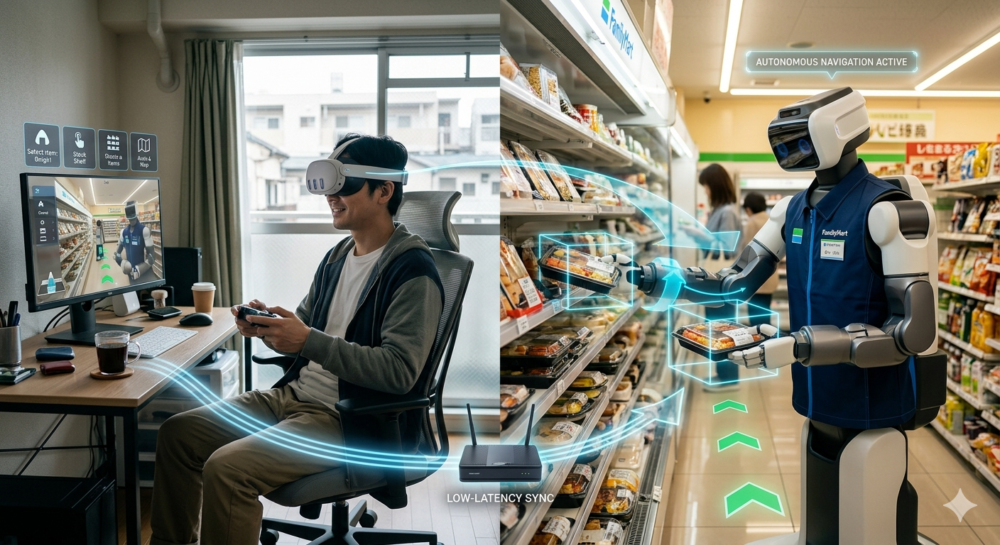

Physical AI
Embodied intelligence that perceives, touches, and manipulates the real world...
Published in Robotics, the RAR framework maps the shift from LLMs to agentic AI in Industry 5.0 — and asks what it takes for autonomous, embodied agents to remain sustainable and human-centered. As robots gain the ability to decide and act, rigorous frameworks for responsibility have never been more critical. This work provides a comprehensive path for aligning agentic robotics with the people it serves.
Read the PaperMy vision is led by a commitment to studying, guiding, and developing human-centered AI and robotics. Intelligent agents should be collaborative, augmentative, and enhance human well-being and quality of life.
Embodied intelligence that perceives, touches, and manipulates the real world...
Agents that decide what to do next and do it, responsibly...

Systems that work with people, not just for them...

Bridging NEP+ and ROS for accessible human-robot collaboration...
Research made physical: platforms and studies where responsible AI meets real robots, real waste streams, and real workplaces.
More on Projects
A physical dual-arm robotic platform integrating UR5e and xArm7 robots for PET-oriented waste sorting.
Evaluating social robots for supporting concentration and emotional well-being in hybrid work environments.
Graduate and undergraduate students are invited to contribute at the intersection of physical AI, agentic AI, and social robotics — through internships, technical training, and research assistant positions. Inquiries open for 2026–2027.